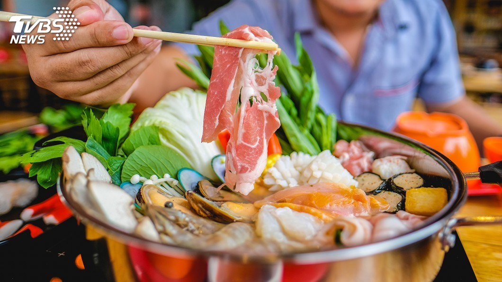

日本不少和風料理，現在這一款和風，還有搭配不同食材，讓口感進擊，像是和風義大利麵，還有燒肉配高湯一起享用，
而東京還有一家火鍋餐廳，巨無霸火鍋能一鍋四吃，被顧客封為「食材的澡堂」。 東京羽田市場一家新開張的火鍋餐廳，
上門的顧客做出了神比喻。 顧客：「很多口味可以享受，不只是火鍋，『食材的澡堂』？」 直徑一公尺的巨大火鍋，
真的像「食材的澡堂」，中間是蒸煮鍋，而外圍則是三款不同口味的高湯，有魚的風味，蝦蟹混搭美味，還有貝類高湯，
一個個大鍋擺在桌上，景象超獨特。 主廚：「魚高湯就用魚類來炊，蝦蟹高湯就用蝦蟹，依照這個方法，做出濃郁有深度的高湯。」
而店家的食材也很特別，像是北海道松葉蟹，還有河豚以及松茸，一道道高檔美味盡在這一大鍋，不管是要加鰹魚節加味，
還是肉片配蒜片吃或青蔥，顧客入口後的表情，就會是這麼浮誇。 記者：「啊，鰹魚節配厚片肉，以及秋鮭高湯的美味，相當的適合。」
接著，看看這一盤豐盛的肉類極品料理，茨城縣常陸牛的各個部位，都是可以大啖的美味，老闆還要獻上無人品嘗過的絕世燒肉味，
秘訣就是和風高湯，先將牛筋煎出汁，接著倒入混合了牛骨、蔬菜、以及雞骨，最後放入鰹魚乾，這一鍋精華高湯就是美味關鍵，而且還能喝。
記者：「一般人會說『和食燒肉沒辦法(喝湯)吧』，不但能喝，還要讓這風味掀流行，希望豬肉一入口，也能用小酒杯喝高湯。」
記者親自品嘗，先吃燒肉，再喝高湯，表情會說話。 記者：「燒肉相當軟嫩，沾上山椒味噌，刺刺的辣度就傳出了香氣，高湯一口氣喝進嘴裡，出現相當爽口的口感。」
這款高湯還能淋飯，當成燒肉茶泡飯來吃。而新宿也有一家和風義大利麵店。 顧客：「高湯會飄出香氣，有高湯的話，就能很順口的一直吃。」
19款義大利麵都是用和風高湯煮出來的，明太子半熟蛋義大利麵，時蔬配蛤蜊義麵，這款以醬油為基底的義大利麵，除了鰹魚節和三款昆布，還有一款美味。
廚師：「這個是辛辣日本魚醬。」 不只添加香辣口感，也要導出食材香氣，放入麵條加以點綴。一道和風蝦子舞茸菇義麵就完成了，東西合併美味，讓顧客讚不絕口。
